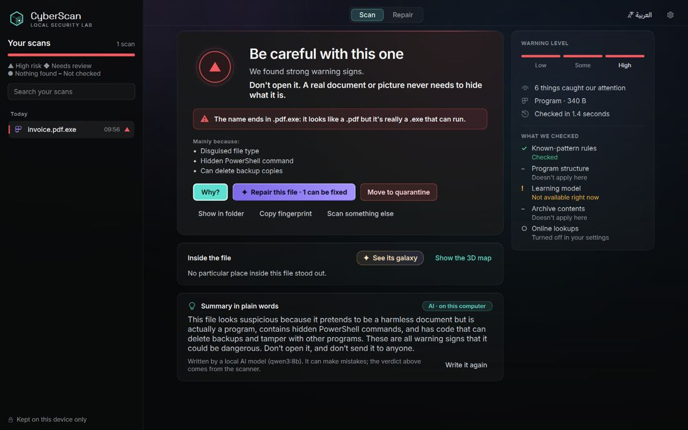
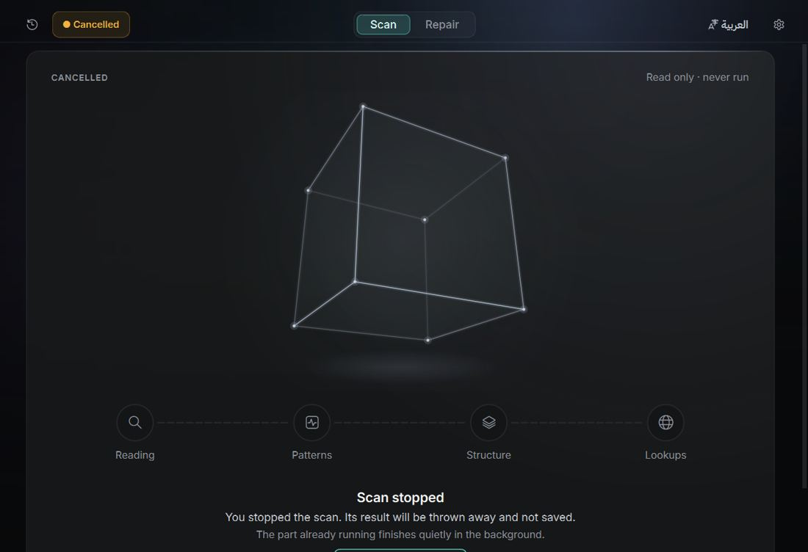
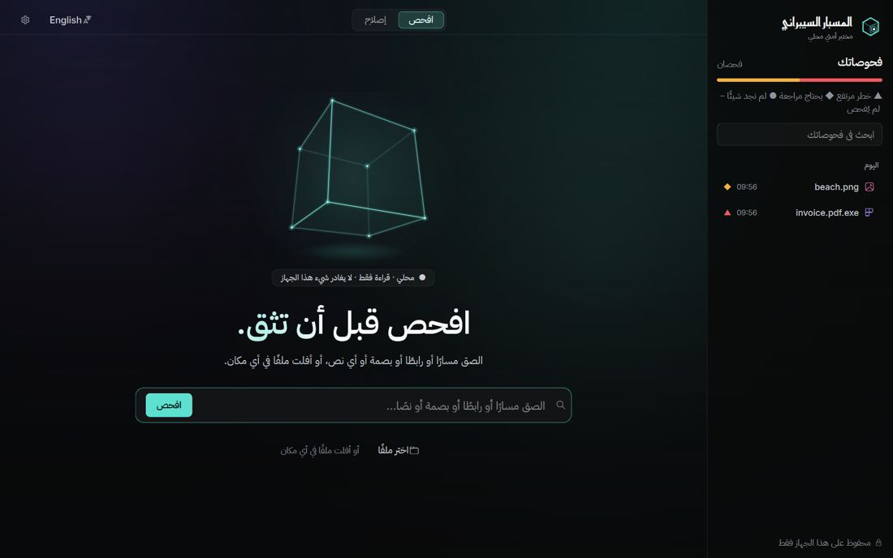
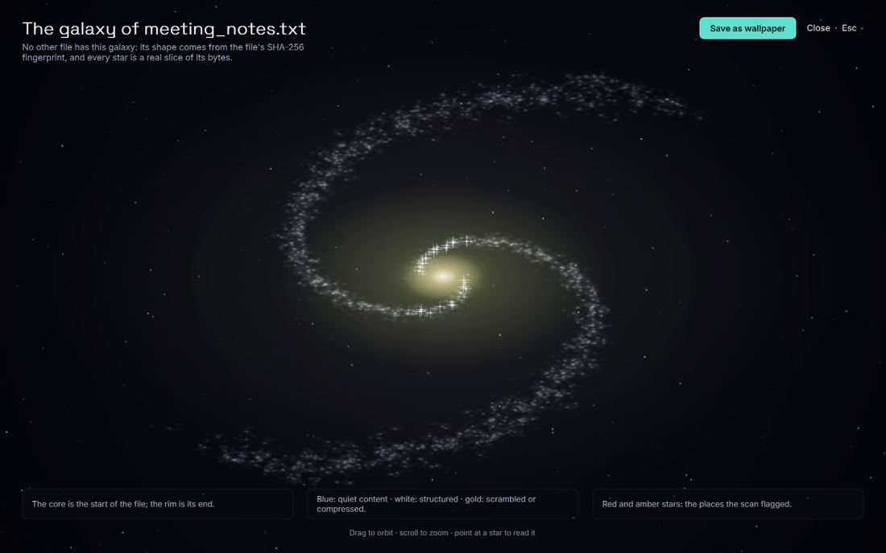

342891bثمانية اختبارات على التطبيق الحقيقي: اختبار الإجهاد، والنقرة الأولى، والمرور المعرفي، وتدقيق الوصول وفق WCAG 2.2 AA، ومبادئ نيلسن، ومقياس SUS، وإتمام المهام، واختبار الثواني الخمس. ثم الدرجة النهائية بالأوزان التي حددتها.
reports/usability/harness/measure.py)، والصور أُخذت منها. أما اختبار النقرة الأولى والثواني الخمس والمرور المعرفي ومقياس SUS فهي تقديرات خبير مبنية على هذه القياسات وعلى الشخصيات العشر من مراجعة سابقة، لا على مشاركين حقيقيين. لتأكيد SUS والنقرة الأولى يلزم 5 إلى 8 مستخدمين فعليين.بعد فحص invoice.pdf.exe (حكم: «احذر من هذا الملف»، مستوى تحذير مرتفع) يظهر بجانب «انقله إلى العزل» زر بنفسجي هو الأبرز في الصف: «✦ أصلح هذا الملف · يمكن إصلاح 1». الإصلاح هنا هو تصحيح الاسم المزدوج فقط، فيكتب invoice (repaired).exe: برنامجًا ضارًا جديدًا بجانب الأصلي، بكلمة «مُصلَح» توحي بالأمان. المستخدمة القلقة (أم خالد) ستضغط الزر الأبرز.
الإصلاح المقترح: لا يُعرض الإصلاح على ملف حكمه «خطر مرتفع» أو امتداده الحقيقي قابل للتشغيل، ويصبح العزل هو الفعل الأساسي. وإن بقي خيار تصحيح الاسم فيُسمّى بصدق «أعد تسميته باسمه الحقيقي (يبقى خطيرًا)» ولا يكون الزر الأبرز.
مقيس على نافذة ظاهرة فعلًا، بلا أي فحص: 64.6% من نواة معالج مع «الخلفية المتحركة» (مفعّلة افتراضيًا)، و0% عند إيقافها. السبب: الخلفية ترسم 10 إطارات في الثانية تحت النافذة كلها، فيُعاد رسم نحو 37 عنصرًا فوقها في كل إطار (999 عملية رسم خلال 3 ثوانٍ). على حاسوب محمول هذا يستنزف البطارية ويرفع الحرارة.
الإصلاح المقترح: إيقاف الخلفية حين لا تكون النافذة نشطة وبعد 10 ثوانٍ بلا تفاعل، وخفضها إلى 4 إطارات، أو رسمها على طبقة منفصلة لا تُجبر العناصر فوقها على إعادة الرسم.
مقيس بنبض كل 10 ملّي ثانية: 20 تبديلًا بين الفحص والإصلاح جمّدت الواجهة 14.3 ثانية (716 ملّي ثانية لكل تبديل)، و20 تبديلًا للغة 10.5 ثانية (526 ملّي ثانية لكل تبديل). كل ما فوق 100 ملّي ثانية يُحس به المستخدم كتعليق.
الإصلاح المقترح: عدم إعادة تطبيق ورقة الأنماط كاملة على النافذة عند كل تبديل؛ تغيير ألوان الوضع عبر خصائص ديناميكية أو لوحة ألوان، وإعادة بناء النصوص فقط عند تبديل اللغة.
عند 1024×700 وما دونها، بعد «أوقفت الفحص»، يأخذ المكعب (ارتفاعه ثابت 380 بكسل) مساحة الشاشة، ويظهر زر «افحص شيئًا آخر» مقطوعًا عند الحافة السفلى. لا تمرير أفقي في أي حجم، لكن الفعل التالي يحتاج تمريرًا.
الإصلاح المقترح: ارتفاع المكعب في شاشة الرحلة يتبع ارتفاع النافذة، كما فعلنا لغرفة السونار في الشاشة الرئيسية.
المجلد موجود، والرسالة خاطئة فتربك المستخدم. الرسالة الصحيحة: «هذا مجلد. اختر ملفًا داخله.»
عند التنقل بـ Tab لا يتغير شكل: زر «✦ شاهد مجرّته»، ومربعات اختيار الإصلاح في قائمة ما وُجد (لأن نمط التركيز يلوّن نص المربع، وهذه المربعات بلا نص)، ومنطقة التمرير في الإعدادات (توقف لا فائدة منه)، وحقل البيانات المتقدمة. بقية العناصر تُظهر التركيز.
«تصدير التقرير» لا يظهر إلا بعد فتح التفاصيل فيصعب اكتشافه · فتح المجرّة يجمّد 0.56 إلى 0.71 ثانية · تفعيل النص الكبير يجمّد 1.7 ثانية · البحث في 400 فحص 0.93 ثانية · زر المسح داخل حقول الإدخال بلا اسم مقروء (4.1.2) · الذاكرة عند البدء 1.26 غيغابايت (في تشغيل واحد تحت ضغط ذاكرة على الجهاز توقفت أداة القياس بخطأ «نفاد الذاكرة»).


تسع مهام نُفذت آليًا على النافذة الحقيقية. نجحت التسع كلها، وبعدد أفعال قليل.
| المهمة | الأفعال | الزمن | أطول تجمد | النتيجة |
|---|---|---|---|---|
| فحص ملف بلوحة المفاتيح فقط (Ctrl+L، لصق، Enter) | 3 | 3.0 ث | 90 مث | نجح |
| فهم سبب الحكم على ملف خطير | 1 | 3.5 ث | 155 مث | نجح ثلاثة أسباب ظاهرة دون نقر |
| نقل ملف خطير إلى العزل | 2 | 0.9 ث | — | نجح مع تأكيد |
| إصلاح ملف من نتيجته (يشمل المشهد الانتقالي) | 2 | 2.6 ث | 202 مث | نجح نسخة مُصلَحة، الأصل باقٍ |
| فحص رابط | 2 | 0.5 ث | 54 مث | نجح «فحصنا شكل الرابط فقط»: صادق |
| تبديل اللغة والعودة | 2 | 0.8 ث | 346 مث | نجح لكن بتجمد |
| العثور على فحص سابق وإعادة فتحه | 2 | 1.2 ث | — | نجح |
| تصدير تقرير | 2 | 0.5 ث | — | نجح الزر مخفي داخل التفاصيل |
| رؤية مجرّة الملف | 1 | 4.6 ث | 559 مث | نجح 2.4 ث منها انفجار مقصود |
معدل الإتمام 9/9 (100%). متوسط الأفعال 1.9. الزمن يشمل انتظار المحرك والرسوم المقصودة.
أربعة عشر سيناريو عدائيًا أو متطرفًا. لم ينهَر التطبيق ولم يظهر أي استثناء في أي منها.
| السيناريو | ما حدث | أطول تجمد | الحكم |
|---|---|---|---|
| «افحص» والحقل فارغ | «أضف شيئًا لفحصه أولًا.» | 48 مث | جيد |
| مسار غير موجود | «هذا الملف غير موجود. تأكد من المسار…» | 63 مث | جيد |
| مجلد بدل ملف | الرسالة نفسها «غير موجود» | 62 مث | رسالة خاطئة |
| ملف فارغ (0 بايت) | «هذا الملف فارغ» | 66 مث | جيد |
| ملف عشوائي 48 ميغابايت | حكم خلال 13.3 ث، والواجهة سلسة | 131 مث | جيد |
| اسم من 180 حرفًا | نتيجة كاملة، بلا تمرير أفقي | 102 مث | جيد |
| اسم بحرف عكس اتجاه مخفي | تحذير قبل الفحص: «هذا الاسم يخفي أحرفًا…» | 57 مث | ممتاز |
| «افحص» عشر مرات بسرعة | فحص واحد فقط، بلا تكرار في السجل | 112 مث | جيد |
| تبديل اللغة 20 مرة | صحيح، ولا نافذة شاردة، لكن 526 مث لكل تبديل | 10520 مث | بطيء |
| تبديل الوضع 20 مرة | صحيح، لكن 716 مث لكل تبديل | 14318 مث | بطيء |
| إيقاف فحص في منتصفه | «أوقفت الفحص» وزر المتابعة ظاهر | 447 مث | جيد |
| 400 فحص في السجل ثم بحث | 11 نتيجة صحيحة | 932 مث | مقبول |
| 800×560 ثم 1024×700 ثم 2560×1440 | لا تمرير أفقي؛ الأزرار تحت الحافة في الصغيرة | 408 مث | متوسط |
| تفعيل النص الكبير | بلا تمرير أفقي ولا قص | 1688 مث | بطيء |
قيس تباين 523 نصًا من البكسلات المرسومة فعلًا في 16 شاشة. نجح 502 منها. الـ 21 الباقية تحققتُ منها مقابل الألوان المعرّفة في القالب، فكانت كلها أخطاء قياس، لا مشاكل حقيقية. سببها أن خطوط الحروف العربية الرفيعة لا تصل كثافتها الكاملة في البكسلات، ونصوص التُقطت أثناء ظهورها التدريجي. أدنى تباين معرّف في القالب كله هو 4.67:1 (نص زر الإصلاح البنفسجي)، أي فوق حد 4.5.
| المعيار | الدليل | الحكم |
|---|---|---|
| 1.4.3 تباين النص | النص الأساسي 18.7:1، الثانوي 12.1:1، الخافت 6.2 إلى 6.5:1، أدنى قيمة 4.67:1 | ناجح |
| 1.4.11 تباين غير النصي | حدود حقل الإدخال 3.06:1 (الحد 3) | ناجح بالكاد |
| 1.4.4 تكبير النص | «نص وعناصر أكبر» بلا قص ولا تمرير أفقي | ناجح |
| 1.4.10 إعادة التدفق | 800×560 بلا تمرير أفقي | ناجح |
| 2.1.1 لوحة المفاتيح | كل المهام التسع ممكنة بلوحة المفاتيح؛ اختصارات Ctrl+L وCtrl+O وCtrl+N وEsc | ناجح |
| 2.4.3 ترتيب التركيز | منطقي في الشاشات الأربع وفي اللغتين: السجل، ثم الشريط العلوي، ثم المحتوى | ناجح |
| 2.4.7 التركيز مرئي | 4 عناصر بلا مؤشر تركيز (انظر أعلاه) | فشل جزئي |
| 2.5.8 حجم الهدف (24 بكسل) | 186 عنصرًا: 169 ناجحة؛ مربعات الإعدادات بارتفاع 20 تنجح باستثناء التباعد؛ زر المسح 22×18 | ناجح باستثناء |
| 2.2.2 إيقاف الحركة | الخلفية تتحرك تلقائيًا أكثر من 5 ثوانٍ، ويمكن إيقافها من الإعدادات؛ وتقليل الحركة في ويندوز يُحترم | ناجح |
| 3.3.1 تحديد الأخطاء | كل الأخطاء نصية تحت الحقل، بلون وبكلمات | ناجح |
| 4.1.2 الاسم والدور | 184 من 186 عنصرًا لها أسماء؛ زر المسح في الحقول بلا اسم | فشل بسيط |
| العربية واتجاه الكتابة | اتجاه كامل من اليمين، النقطة في نهاية الجملة، الأرقام والمسارات معزولة | ممتاز |
| المبدأ | من 10 | الدليل |
|---|---|---|
| 1. وضوح حالة النظام | 9 | مراحل الفحص الحقيقية، و«أوقفت الفحص» صريحة، وإشعارات للنسخ والعزل والحفظ |
| 2. التطابق مع العالم الحقيقي | 9 | «لا تفتحه»، «المحتوى عشوائي جدًا»؛ لغة يفهمها غير التقني |
| 3. التحكم والحرية | 8 | إيقاف، وإغلاق بـ Esc، والعزل قابل للاستعادة، والإصلاح لا يمس الأصل |
| 4. الاتساق والمعايير | 8 | نظام لوني واحد؛ لكن «الإصلاح» يعني إعادة تسمية في حالة واستعادة بايتات في أخرى |
| 5. منع الأخطاء | 5 | تحذير الاسم المموّه ممتاز، لكن زر الإصلاح على برنامج خطير ينسخ الخطر |
| 6. التعرّف بدل التذكّر | 8 | المعاينة قبل الفحص، والأسباب ظاهرة؛ التصدير مخفي داخل التفاصيل |
| 7. المرونة والكفاءة | 7 | اختصارات ممتازة، لكن التجمد عند التبديل يعاقب المستخدم السريع |
| 8. الجمال والبساطة | 7 | جميل جدًا، لكن بطاقة النتيجة فيها سبعة أفعال، وثلاثة أزرار ملوّنة تتنافس |
| 9. التعافي من الأخطاء | 8 | رسائل تشرح وتقترح الحل؛ خطأ واحد في رسالة المجلد |
| 10. المساعدة والتوثيق | 7 | تلميحات ونصوص شارحة في كل مكان، وشرح للمجرّة؛ لا صفحة مساعدة |
المتوسط 7.6 من 10.
لكل مهمة: أين يُتوقع أن ينقر مستخدم جديد أولًا، بناءً على حجم كل عنصر وتباينه وموضعه في الصور المقاسة.
| المهمة | الهدف الصحيح | النقرة الأولى المتوقعة | الخطر |
|---|---|---|---|
| افحص ملفًا على جهازك | «اختر ملفًا» أو السحب | زر «افحص» الفيروزي والحقل فارغ (الأبرز) | متوسط: يظهر خطأ لطيف ثم يُكمل |
| تخلّص من ملف خطير | «انقله إلى العزل» | «✦ أصلح هذا الملف» البنفسجي المتدرّج | حرج |
| لماذا هذا الحكم؟ | «لماذا؟» | «لماذا؟»، والأسباب أصلًا ظاهرة | منخفض |
| أصلح ملفًا معبوثًا به | زر الإصلاح في النتيجة أو «إصلاح» أعلى | الزر البنفسجي | منخفض |
| غيّر اللغة | «العربية» أعلى | صحيح | منخفض |
| ابحث عن فحص الأمس | بحث السجل | صحيح | منخفض |
| أطفئ الحركة | الترس (بلا نص) | الترس بعد تردد | متوسط |
| صدّر تقريرًا | داخل «لماذا؟» | البحث في الأزرار الظاهرة دون نتيجة | متوسط |
لكل خطوة أربعة أسئلة: هل سيحاول المستخدم الفعل الصحيح؟ هل سيرى الأداة؟ هل سيربطها بهدفه؟ هل سيفهم أنه تقدّم؟
| المهمة والخطوة | يحاول | يرى | يربط | يفهم التقدم | الملاحظة |
|---|---|---|---|---|---|
| فحص: اختيار الملف | ✓ | ✓ | ✓ | ✓ | المعاينة تسمّي النوع والحجم قبل الفحص |
| فحص: الانتظار | ✓ | ✓ | ✓ | ✓ | أربع مراحل حقيقية وزر إيقاف |
| فحص: قراءة الحكم | ✓ | ✓ | ✓ | ✓ | «لا تفتحه» في سطر واحد |
| تصرّف: الفعل الصحيح لملف خطير | ✓ | ✓ | ✗ | ✓ | «أصلح» يُفهم «اجعله آمنًا» |
| إصلاح: مراجعة ما وُجد | ✓ | ✓ | ✓ | ✓ | كل بند مع مكانه وما سيُفعل به |
| إصلاح: النتيجة | ✓ | ✓ | ✓ | ✓ | علامة صح، وقبل وبعد، والبصمتان |
| تقرير: إيجاد التصدير | ✓ | ✗ | ✓ | ✓ | مخفي حتى فتح التفاصيل |
| إعدادات: حفظ تغيير | ✓ | ✗ | ✓ | ✓ | زر الحفظ أسفل لوحة طويلة يحتاج تمريرًا |
قدّرتُ إجابات الأسئلة العشرة لكل من الشخصيات العشر في المراجعة السابقة، بناءً على ما قيس هنا. هذا تقدير خبير، لا استبيان حقيقي.
| الشخصية | SUS | ما يرفع أو يخفض الدرجة |
|---|---|---|
| ليلى، مصممة | 85 | الجمال والاتساق، والمجرّة |
| د. نورة، خبيرة توطين | 80 | عربية صحيحة واتجاه كامل |
| يوسف، 11 سنة | 72.5 | المكعب والمجرّة يجذبانه، والنص كثير |
| كريم، مبرمج يعيش على لوحة المفاتيح | 72.5 | الاختصارات جيدة، والتجمد يزعجه |
| الحاج عبد الرحمن، 72 سنة | 70 | النص الكبير والتباين جيدان، والمربعات صغيرة |
| البروفيسور، ناقد تجربة | 70 | منع الأخطاء والأفعال السبعة |
| سارة، محللة SOC | 67.5 | البصمات جيدة، والتصدير مخفي |
| أم خالد، غير تقنية وقلقة | 65 | الحكم واضح، والزر البنفسجي يربكها |
| ماجد، كفيف | 62.5 | أسماء العناصر جيدة، والمكعب والمجرّة بصريان |
| «شبح»، فريق أحمر | 55 | الإصلاح ينسخ برنامجًا خطيرًا |
المتوسط المقدَّر: 70. هذا فوق متوسط الصناعة (68)، وتقديره «جيد». إصلاح العيب الحرج وحده يرفع أقل الدرجات ويُقدَّر أن يقرّب المتوسط من 74.
| الشاشة | ما يبقى في الذاكرة | ما يفوت |
|---|---|---|
| الرئيسية | المكعب الزجاجي، و«افحص قبل أن تثق»، والحقل، و«محلي · لا يغادر شيء هذا الجهاز» | أن السحب ممكن (النص صغير)، ووجود وضع الإصلاح |
| نتيجة خطيرة | المثلث الأحمر، و«احذر من هذا الملف»، و«لا تفتحه»، وتنبيه الامتداد المزدوج | أي زر هو الآمن: ثلاثة ملوّنة متساوية الوزن، والبنفسجي أبرزها |
| الإصلاح | «إصلاح بحذر»، والنسخة، و«الأصل لا يُمس» | أن الفحص نفسه لا يكفي لإثبات الأمان (النص موجود لكنه صغير) |
| المرصد | المجرّة نفسها، و«لا يملك أي ملف آخر هذه المجرّة» | أن النجوم الحمراء مواضع خطر (المفتاح أسفل الشاشة) |


الأثر المقدَّر بعد البنود 1 إلى 3: نحو 84 من 100.
الأدلة: reports/usability/data.json (كل القياسات)، وreports/usability/screens/ (36 لقطة)، وreports/usability/harness/measure.py (أداة القياس، قابلة لإعادة التشغيل).